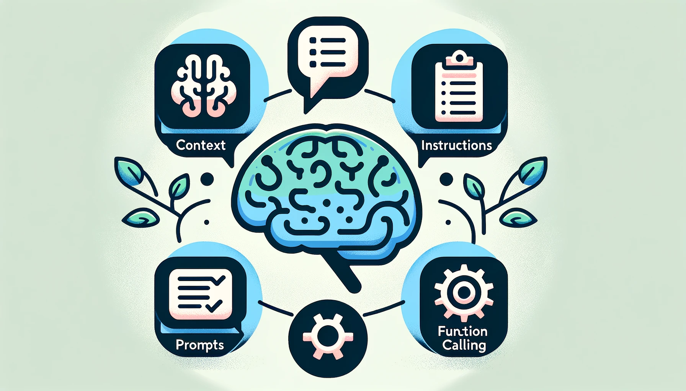
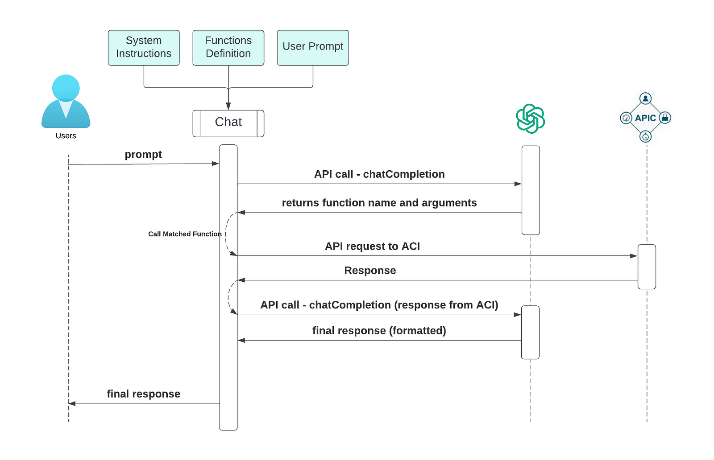

Instructions, Context, Function Calling and Prompts
The most crucial information we must provide to any LLM chat model are the context, detailed instructions, and precise prompts.
This article is part of a series — You can find Part I here

Instructions
Instructions play a crucial role in shaping an LLM into a valuable assistant. Their purpose is to set clear expectations and guide narratives and context, thereby reducing inaccuracies and ensuring more precise responses.
Creating practical instructions often involves trial and error and is an iterative process. This is akin to conveying domain expert knowledge to others who aren’t familiar with the same domain. Experts familiar with their field might overlook mentioning basic facts or best practices that have become second nature to them.
When it comes to network management, we should establish some fundamental expectations for the LLM:
- Insist on factual responses, avoiding any fabricated or imaginary configurations.
- Require precise API calls for acquiring specific information or implementing the correct configurations.
- Avoid making assumptions about input parameters when making API calls. If a prompt is ambiguous, the model should always seek clarification from the user.
- For instance, we should not assume the use of
defaultvalues when deploying ACI policies.
- For instance, we should not assume the use of
- Adhere strictly to user-defined output formats.
Here’s an illustrative example of global instructions:
"""
You are a co-pilot to the network engineers.
All tasks are executed via function calls
Only use the functions you have been provided with.
Don't make assumptions about what values to plug into functions. Always ask for clarification if a user request is ambiguous
when you encounter an error during a function call, pass back the exact error message, and do not interpret it
"""
- It sets the context for networking administration and specifies the exclusive use of provided function calls.
- It also instructs ChatGPT not to interpret any error messages, leaving the diagnosis to the network admin.
- We can also define more granular instructions at the function level (more on this later).
This seemingly small set of instructions was created via trial and error over several iterations.
Context
Context is similar to memory for LLM. An LLM has to be mindful of the conversation’s context to respond appropriately. Initial contexts are defined as part of the global instructions as shown above.
As we engage in a dialogue with ChatGPT, each new piece of information enriches the context. The entirety of the conversation history is repeatedly passed to ChatGPT as the conversation continues, enabling it to generate informed and relevant responses based on this accumulated context.
With that said, it’s important to note that the context in LLMs is confined to a single conversation and is restricted by the size of its memory, often referred to as the ‘Context Window. This implies that the volume of text an LLM can process at a time is limited. Therefore, “reading a book” is a challenging task for most LLMs. Don’t try sending “TCP/IP Volume 1 and 2” to ChatGPT and expect some in-depth Q&A sessions.
Function Calling
While our usual interactions with ChatGPT are conversational, yielding responses in human-readable plain text, we can also use APIs to request that ChatGPT provides a specific function with arguments. This process involves two main components:
A pre-defined data structure
For instance,
get_fabric_health_function = create_function_config(
name="get_fabric_health",
description="Get the latest fabric health, provide user min, max and average for the past 5 minutes",
properties={},
required=[]
)
-
name: The name of the function to be called.
-
description: This serves as an instruction. For instance, in the above example, we specify that the function should get the minimum, maximum, and average values for the past 5 minutes. ChatGPT may default to providing a single value without this explicit instruction.
-
properties: Here, we detail the specifics of the arguments. This includes providing a function description akin to an instruction but at the argument level. Additionally, we can define an enumeration parameter - a list of acceptable values for an argument. (This will be discussed in more detail in the following article.)
-
required: This field informs ChatGPT which argument(s) are essential. If a user fails to provide sufficient information, ChatGPT may hallucinate from training data.
Note: ChatGPT utilizes a dictionary structure to define functions. The code mentioned above is designed for abstraction purposes, which accounts for the slight differences in formatting.
Include defined functions in the API call
res = openai.ChatCompletion.create(
model=self.model,
messages=self.messages,
functions=self.functions,
function_call=self.function_call,
temperature=0
)
-
In the process of invoking the ChatCompletion Python API, we specifically incorporate two fields in addition to the common ones:
functions`` andfunction_call`` -
The
functionsfield is a list of function definitions, as previously defined. In our demonstrations, we will include all the specified functions. -
The
function_callfield enables us to force the model to use a specific function. By default, this value is set toauto -
temperature=0field is not particular to the function call. Setting to0helps control hallucination -
You can find a more detailed example with explanations on OpenAI’s Github page - How_to_call_functions_with_chat_models
Prompts
Prompts are the means through which we frame our intentions. In interactions with an LLM model, it is crucial to articulate our intentions clearly and include all relevant information within the prompt.
Emphasizing simplicity and precision, and with a well-structured context, prompts in this scenario are analogous to CLI commands expressed in human language (Human Language Interface).
While numerous strategies exist for effective prompt engineering, we aim to engage in straightforward English dialogue without relying on advanced prompt engineering yet still execute precise API calls to the APIC.
Consequently, a basic understanding of networking is necessary to provide ChatGPT with the required parameters during the prompting process
Below are some example prompts. Note that here, we used ACI-specific terminology such as “fabric,” “UR (unicast routing),” and “BD (Bridge Domain)” to assess ChatGPT’s awareness of context.
# This question intends to get the fabric health score
- How is my fabric doing?
# The intention is to get a list of routed BDs, including the default ones.
# Excluding default BDs requires further instruction tuning, though
- Can you get me a list of BDs with UR enabled?
# We'll further analyze this one in the following article
# Can you spot any potential issues in this prompt, though?
- Can you add a new BD named VLAN5_BD to Tenant customera?
# A simple question to count BDs.
# We'll further analyze ChatGPT's response in the following article
- How many BDs are there?
Bring Everything Together
Now that we’ve covered all the fundamentals, let’s see how to integrate these elements sequentially to create a streamlined process.

Once we receive a prompt from the user, the first step involves sending the following information to the ChatGPT API.
- Global instructions
- List of functions
- User prompts
This results in the API returning the name of the function we should call and the necessary arguments. We then use this information to execute the appropriate API call to ACI, which yields a JSON response.
At this juncture, we have two options:
-
We can send the JSON response back to ChatGPT for parsing, as illustrated above. We’ll use this approach for all future demonstrations.
-
Alternatively, we can parse the JSON using another function. This approach is less token-intensive but requires more significant software engineering effort.
Finally, we present the output to the user.
A Simple Demonstration
Now that we understand the entire process flow let’s walk through the first query as a simple demonstration. (we’ll go into depth in the next article)
Q: How is my fabric doing?
Recall that the intention is to simply get the health score (as defined in the function definition).
How can I assist you today? => how's my fabric doing
Making function call.... {
"name": "get_fabric_health",
"arguments": "{}"
}
-
In this instance, specifying the entire “Cisco ACI Fabric” context wasn’t necessary.
-
The function
get_fabric_healthis correctly returned from ChatGPT with no arguments.
We received the below output after sending the above API call to ACI.
{
"fabricOverallHealthHist5min": {
"attributes": {
"childAction": "",
"cnt": "30",
"dn": "topology/HDfabricOverallHealth5min-0",
"healthAvg": "81",
"healthMax": "81",
"healthMin": "81",
"healthSpct": "0",
"healthThr": "",
"healthTr": "0",
"index": "0",
"lastCollOffset": "300",
"repIntvEnd": "2023-10-17T19:43:56.439+00:00",
"repIntvStart": "2023-10-17T19:38:55.934+00:00",
"status": ""
}
}
}
The JSON output is subsequently sent to ChatGPT for additional data extraction. Following this, ChatGPT provided a response that precisely captured the requested average, minimum, and maximum values despite them being identical
The fabric health for the past 5 minutes has been consistent with an average,
minimum, and maximum health score of 81.
Variations in Prompts
Let’s examine how ChatGPT responds to slight variations in phrasing the exact prompt.
Example Prompt: what's my health score? and give me the hs
How can I assist you today? => what's my health score ?
==Response==
Making function call.... {
"name": "get_fabric_health",
"arguments": "{}"
}
Your health score for the past 5 minutes is as follows:
- Minimum: 84
- Maximum: 84
- Average: 84
==End of response==
How can I assist you today? => give me the hs
==Response==
Making function call.... {
"name": "get_fabric_health",
"arguments": "{}"
}
Your health score for the past 5 minutes is as follows:
- Minimum: 84
- Maximum: 84
- Average: 84
==End of response==
-
In both cases, the response outputs differed from the previous instance. This is a common scenario where asking ChatGPT the same question multiple times can result in slightly different outputs, though they convey the same meaning. In this context, the variation isn’t a significant issue. With some additional fine-tuning of the instructions, we can address this.
-
Remarkably, ChatGPT correctly interpreted
hsashealth score. A cautionary note: only four functions were provided in this example, which probably helped control hallucinations.
Conclusion
ChatGPT demonstrates proficiency in executing API actions when provided with the correct context, clear guidance, and precise function definitions.
However, achieving output consistency comparable to tools like Ansible requires further refinement of instructions and consideration of user experience.
In the following article, we’ll analyze ChatGPT’s responses to the remaining questions in depth, examining its capability to handle more complex scenarios.
See you in the next one! Networking and LLM in the Age of AI - Pt III: In-Depth Analysis of ChatGPT’s Responses